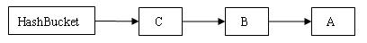

● 请说明List、Map、Set三个接口存取元素时，各有什么特点？
考察点：List
参考回答：
List以特定索引来存取元素，可以有重复元素。Set不能存放重复元素（用对象的equals()方法来区分元素是否重复）。Map保存键值对（key-value pair）映射，映射关系可以是一对一或多对一。Set和Map容器都有基于哈希存储和排序树的两种实现版本，基于哈希存储的版本理论存取时间复杂度为O(1)，而基于排序树版本的实现在插入或删除元素时会按照元素或元素的键（key）构成排序树从而达到排序和去重的效果。
● 阐述ArrayList、Vector、LinkedList的存储性能和特性
考察点：ArrayList
参考回答：
ArrayList 和Vector都是使用数组方式存储数据，此数组元素数大于实际存储的数据以便增加和插入元素，它们都允许直接按序号索引元素，但是插入元素要涉及数组元素移动等内存操作，所以索引数据快而插入数据慢，Vector中的方法由于添加了synchronized修饰，因此Vector是线程安全的容器，但性能上较ArrayList差，因此已经是Java中的遗留容器。LinkedList使用双向链表实现存储（将内存中零散的内存单元通过附加的引用关联起来，形成一个可以按序号索引的线性结构，这种链式存储方式与数组的连续存储方式相比，内存的利用率更高），按序号索引数据需要进行前向或后向遍历，但是插入数据时只需要记录本项的前后项即可，所以插入速度较快。Vector属于遗留容器（Java早期的版本中提供的容器，除此之外，Hashtable、Dictionary、BitSet、Stack、Properties都是遗留容器），已经不推荐使用，但是由于ArrayList和LinkedListed都是非线程安全的，如果遇到多个线程操作同一个容器的场景，则可以通过工具类Collections中的synchronizedList方法将其转换成线程安全的容器后再使用（这是对装潢模式的应用，将已有对象传入另一个类的构造器中创建新的对象来增强实现）。
● 请判断List、Set、Map是否继承自Collection接口？
考察点：collection接口
参考回答：
List、Set 是，Map 不是。Map是键值对映射容器，与List和Set有明显的区别，而Set存储的零散的元素且不允许有重复元素（数学中的集合也是如此），List是线性结构的容器，适用于按数值索引访问元素的情形。
● 请讲讲你所知道的常用集合类以及主要方法？
考察点：集合
参考回答：
最常用的集合类是List 和 Map。
List 的具体实现包括 ArrayList 和 Vector，它们是可变大小的列表，比较适合构建、存储和操作任何类型对象的元素列表。List 适用于按数值索引访问元素的情形。
Map 提供了一个更通用的元素存储方法。 Map 集合类用于存储元素对（称作”键”和”值”），其中每个键映射到一个值。
● 请说明Collection 和 Collections的区别。
考察点：集合
参考回答：
Collection是集合类的上级接口，继承与他的接口主要有Set 和List.
Collections是针对集合类的一个帮助类，他提供一系列静态方法实现对各种集合的搜索、排序、线程安全化等操作。
● 请说明ArrayList和LinkedList的区别？
考察点：ArrayList
参考回答：
ArrayList和LinkedList都实现了List接口，他们有以下的不同点：
ArrayList是基于索引的数据接口，它的底层是数组。它可以以O(1)时间复杂度对元素进行随机访问。与此对应，LinkedList是以元素列表的形式存储它的数据，每一个元素都和它的前一个和后一个元素链接在一起，在这种情况下，查找某个元素的时间复杂度是O(n)。
相对于ArrayList，LinkedList的插入，添加，删除操作速度更快，因为当元素被添加到集合任意位置的时候，不需要像数组那样重新计算大小或者是更新索引。
LinkedList比ArrayList更占内存，因为LinkedList为每一个节点存储了两个引用，一个指向前一个元素，一个指向下一个元素。
● 请你说明HashMap和Hashtable的区别？
考察点：集合
参考回答：
HashMap和Hashtable都实现了Map接口，因此很多特性非常相似。但是，他们有以下不同点：
HashMap允许键和值是null，而Hashtable不允许键或者值是null。
Hashtable是同步的，而HashMap不是。因此，HashMap更适合于单线程环境，而Hashtable适合于多线程环境。
HashMap提供了可供应用迭代的键的集合，因此，HashMap是快速失败的。另一方面，Hashtable提供了对键的列举(Enumeration)。
一般认为Hashtable是一个遗留的类。
● 请说说快速失败(fail-fast)和安全失败(fail-safe)的区别？
考察点：集合
参考回答：
Iterator的安全失败是基于对底层集合做拷贝，因此，它不受源集合上修改的影响。java.util包下面的所有的集合类都是快速失败的，而java.util.concurrent包下面的所有的类都是安全失败的。快速失败的迭代器会抛出ConcurrentModificationException异常，而安全失败的迭代器永远不会抛出这样的异常。
● 请你说说Iterator和ListIterator的区别？
考察点：迭代器
参考回答：
Iterator和ListIterator的区别是：
Iterator可用来遍历Set和List集合，但是ListIterator只能用来遍历List。
Iterator对集合只能是前向遍历，ListIterator既可以前向也可以后向。
ListIterator实现了Iterator接口，并包含其他的功能，比如：增加元素，替换元素，获取前一个和后一个元素的索引，等等。
● 请简单说明一下什么是迭代器？
考察点：JAVA迭代器
参考回答：
Iterator提供了统一遍历操作集合元素的统一接口, Collection接口实现Iterable接口,
每个集合都通过实现Iterable接口中iterator()方法返回Iterator接口的实例, 然后对集合的元素进行迭代操作.
有一点需要注意的是：在迭代元素的时候不能通过集合的方法删除元素, 否则会抛出ConcurrentModificationException 异常. 但是可以通过Iterator接口中的remove()方法进行删除.
● 请解释为什么集合类没有实现Cloneable和Serializable接口？
考察点：JAVA集合
参考回答：
克隆(cloning)或者是序列化(serialization)的语义和含义是跟具体的实现相关的。因此，应该由集合类的具体实现来决定如何被克隆或者是序列化。
考察点：JAVA集合集合类接口指定了一组叫做元素的对象。集合类接口的每一种具体的实现类都可以选择以它自己的方式对元素进行保存和排序。有的集合类允许重复的键，有些不允许。Java集合类提供了一套设计良好的支持对一组对象进行操作的接口和类。Java集合类里面最基本的接口有：Collection：代表一组对象，每一个对象都是它的子元素。Set：不包含重复元素的Collection。List：有顺序的collection，并且可以包含重复元素。Map：可以把键(key)映射到值(value)的对象，键不能重复。
● 请你说明一下ConcurrentHashMap的原理？
考察点：JAVA内存模型
参考回答：
ConcurrentHashMap 类中包含两个静态内部类 HashEntry 和 Segment。HashEntry 用来封装映射表的键 / 值对；Segment 用来充当锁的角色，每个 Segment 对象守护整个散列映射表的若干个桶。每个桶是由若干个 HashEntry 对象链接起来的链表。一个 ConcurrentHashMap 实例中包含由若干个 Segment 对象组成的数组。HashEntry 用来封装散列映射表中的键值对。在 HashEntry 类中，key，hash 和 next 域都被声明为 final 型，value 域被声明为 volatile 型。
1 | static final class HashEntry<K,V> { |
在ConcurrentHashMap 中，在散列时如果产生“碰撞”，将采用“分离链接法”来处理“碰撞”：把“碰撞”的 HashEntry 对象链接成一个链表。由于 HashEntry 的 next 域为 final 型，所以新节点只能在链表的表头处插入。 下图是在一个空桶中依次插入 A，B，C 三个 HashEntry 对象后的结构图：
图1. 插入三个节点后桶的结构示意图：

注意：由于只能在表头插入，所以链表中节点的顺序和插入的顺序相反。
Segment 类继承于 ReentrantLock 类，从而使得 Segment 对象能充当锁的角色。每个 Segment 对象用来守护其（成员对象 table 中）包含的若干个桶。
● 请解释一下TreeMap?
考察点：key-value集合
参考回答：
TreeMap是一个有序的key-value集合，基于红黑树（Red-Black tree）的 NavigableMap实现。该映射根据其键的自然顺序进行排序，或者根据创建映射时提供的 Comparator进行排序，具体取决于使用的构造方法。
考点：集合
参考回答：
ArrayList是实现了基于动态数组的数据结构，而LinkedList是基于链表的数据结构2. 对于随机访问get和set，ArrayList要优于LinkedList，因为LinkedList要移动指针；ArrayList并发add()可能出现数组下标越界异常。
● 请你说明concurrenthashmap有什么优势以及1.7和1.8区别？
考点：集合
参考回答：
Concurrenthashmap线程安全的，1.7是在jdk1.7中采用Segment + HashEntry的方式进行实现的，lock加在Segment上面。1.7size计算是先采用不加锁的方式，连续计算元素的个数，最多计算3次：1、如果前后两次计算结果相同，则说明计算出来的元素个数是准确的；2、如果前后两次计算结果都不同，则给每个Segment进行加锁，再计算一次元素的个数；
1.8中放弃了Segment臃肿的设计，取而代之的是采用Node + CAS + Synchronized来保证并发安全进行实现，1.8中使用一个volatile类型的变量baseCount记录元素的个数，当插入新数据或则删除数据时，会通过addCount()方法更新baseCount，通过累加baseCount和CounterCell数组中的数量，即可得到元素的总个数；
● 请你说明一下TreeMap的底层实现？
考点：集合
参考回答：
TreeMap 的实现就是红黑树数据结构，也就说是一棵自平衡的排序二叉树，这样就可以保证当需要快速检索指定节点。
红黑树的插入、删除、遍历时间复杂度都为O(lgN)，所以性能上低于哈希表。但是哈希表无法提供键值对的有序输出，红黑树因为是排序插入的，可以按照键的值的大小有序输出。红黑树性质：
性质1：每个节点要么是红色，要么是黑色。
性质2：根节点永远是黑色的。
性质3：所有的叶节点都是空节点（即 null），并且是黑色的。
性质4：每个红色节点的两个子节点都是黑色。（从每个叶子到根的路径上不会有两个连续的红色节点）
性质5：从任一节点到其子树中每个叶子节点的路径都包含相同数量的黑色节点。
● 请你说明ConcurrentHashMap锁加在了哪些地方？
考点：集合
参考回答：
加在每个Segment 上面。
● 请你解释HashMap的容量为什么是2的n次幂？
考点：集合
参考回答：
负载因子默认是0.75， 2^n是为了让散列更加均匀，例如出现极端情况都散列在数组中的一个下标，那么hashmap会由O（1）复杂退化为O（n）的。
● 请你简单介绍一下ArrayList和LinkedList的区别，并说明如果一直在list的尾部添加元素，用哪种方式的效率高？
考点：集合
参考回答：
ArrayList采用数组数组实现的，查找效率比LinkedList高。LinkedList采用双向链表实现的，插入和删除的效率比ArrayList要高。一直在list的尾部添加元素，LinkedList效率要高。
● 如果hashMap的key是一个自定义的类，怎么办？
考点：集合
参考回答：
使用HashMap，如果key是自定义的类，就必须重写hashcode()和equals()。
● 请你解释一下hashMap具体如何实现的？
考点：集合
参考回答：
Hashmap基于数组实现的，通过对key的hashcode & 数组的长度得到在数组中位置，如当前数组有元素，则数组当前元素next指向要插入的元素，这样来解决hash冲突的，形成了拉链式的结构。put时在多线程情况下，会形成环从而导致死循环。数组长度一般是2n，从0开始编号，所以hashcode & （2n-1），（2n-1）每一位都是1，这样会让散列均匀。需要注意的是，HashMap在JDK1.8的版本中引入了红黑树结构做优化，当链表元素个数大于等于8时，链表转换成树结构；若桶中链表元素个数小于等于6时，树结构还原成链表。因为红黑树的平均查找长度是log(n)，长度为8的时候，平均查找长度为3，如果继续使用链表，平均查找长度为8/2=4，这才有转换为树的必要。链表长度如果是小于等于6，6/2=3，虽然速度也很快的，但是转化为树结构和生成树的时间并不会太短。还有选择6和8，中间有个差值7可以有效防止链表和树频繁转换。假设一下，如果设计成链表个数超过8则链表转换成树结构，链表个数小于8则树结构转换成链表，如果一个HashMap不停的插入、删除元素，链表个数在8左右徘徊，就会频繁的发生树转链表、链表转树，效率会很低。
● 请你说明一下Map和ConcurrentHashMap的区别？
考点：集合
参考回答：
hashmap是线程不安全的，put时在多线程情况下，会形成环从而导致死循环。CoucurrentHashMap是线程安全的，采用分段锁机制，减少锁的粒度。